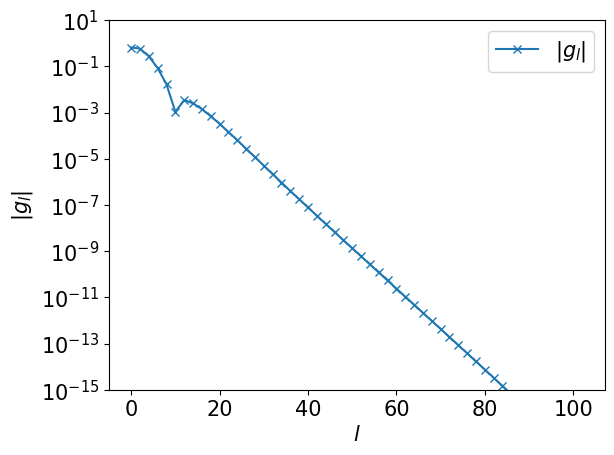
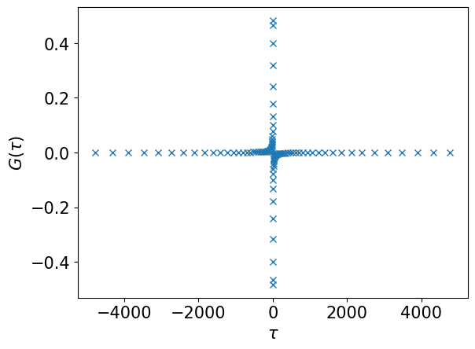
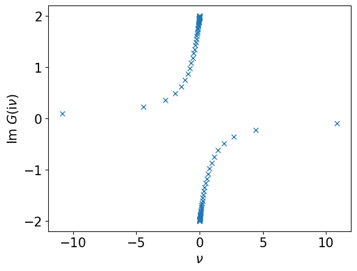
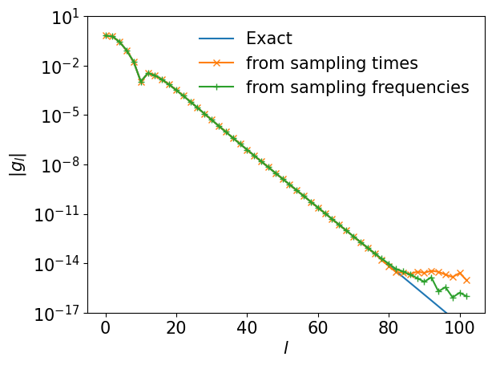
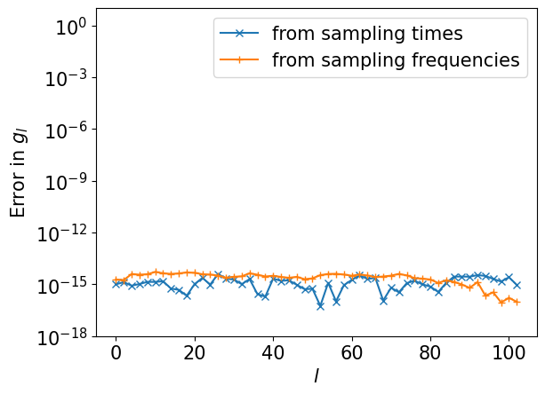

import sparse_ir
import numpy as np
%matplotlib inline
import matplotlib.pyplot as plt
plt.rcParams['font.size'] = 15
def rho(omega):
if np.abs(omega) < 1:
return (2/np.pi) * np.sqrt(1-omega**2)
else:
return 0.0
beta = 10000
wmax = 1
basis = sparse_ir.FiniteTempBasis("F", beta, wmax, eps=1e-15)
rhol = basis.v.overlap(rho, -wmax, wmax)
gl = - basis.s * rhol
ls = np.arange(basis.size)
plt.semilogy(ls[::2], np.abs(gl[::2]), marker="x", label=r"$|g_l|$")
plt.xlabel(r"$l$")
plt.ylabel(r"$|g_l|$")
plt.ylim([1e-15, 10])
plt.legend()
plt.show()

smpl_tau = sparse_ir.TauSampling(basis)
print("sampling times: ", smpl_tau.sampling_points)
print("Condition number: ", smpl_tau.cond)
sampling times:
[-4.77367971e+03 -4.32558093e+03 -3.89066195e+03 -3.47632675e+03
-3.08822305e+03 -2.73005010e+03 -2.40365799e+03 -2.10933930e+03
-1.84620401e+03 -1.61255276e+03 -1.40619863e+03 -1.22471811e+03
-1.06563154e+03 -9.26523584e+02 -8.05116904e+02 -6.99312213e+02
-6.07205075e+02 -5.27087701e+02 -4.57441536e+02 -3.96924657e+02
-3.44356665e+02 -2.98702768e+02 -2.59058095e+02 -2.24632846e+02
-1.94738594e+02 -1.68775857e+02 -1.46222974e+02 -1.26626234e+02
-1.09591176e+02 -9.47749803e+01 -8.18798420e+01 -7.06472437e+01
-6.08530255e+01 -5.23031657e+01 -4.48301679e+01 -3.82899524e+01
-3.25591383e+01 -2.75326206e+01 -2.31213652e+01 -1.92503770e+01
-1.58568265e+01 -1.28883391e+01 -1.03014593e+01 -8.06029765e+00
-6.13536426e+00 -4.50258218e+00 -3.14246915e+00 -2.03947191e+00
-1.18143645e+00 -5.59200332e-01 -1.66317562e-01 -8.31587808e-02
8.31587808e-02 1.66317562e-01 5.59200332e-01 1.18143645e+00
2.03947191e+00 3.14246915e+00 4.50258218e+00 6.13536426e+00
8.06029765e+00 1.03014593e+01 1.28883391e+01 1.58568265e+01
1.92503770e+01 2.31213652e+01 2.75326206e+01 3.25591383e+01
3.82899524e+01 4.48301679e+01 5.23031657e+01 6.08530255e+01
7.06472437e+01 8.18798420e+01 9.47749803e+01 1.09591176e+02
1.26626234e+02 1.46222974e+02 1.68775857e+02 1.94738594e+02
2.24632846e+02 2.59058095e+02 2.98702768e+02 3.44356665e+02
3.96924657e+02 4.57441536e+02 5.27087701e+02 6.07205075e+02
6.99312213e+02 8.05116904e+02 9.26523584e+02 1.06563154e+03
1.22471811e+03 1.40619863e+03 1.61255276e+03 1.84620401e+03
2.10933930e+03 2.40365799e+03 2.73005010e+03 3.08822305e+03
3.47632675e+03 3.89066195e+03 4.32558093e+03 4.77367971e+03]
Condition number:
56.795150177430045
# Evaluate G(τ) on the sampling times
gtau_smpl = smpl_tau.evaluate(gl)
plt.plot(smpl_tau.sampling_points, gtau_smpl, marker="x", ls="")
plt.xlabel(r"$\tau$")
plt.ylabel(r"$G(\tau)$")
plt.show()
# Fit G(τ) on the sampling times
gl_reconst_from_tau = smpl_tau.fit(gtau_smpl)

smpl_matsu = sparse_ir.MatsubaraSampling(basis)
print("sampling frequencies: ", smpl_matsu.sampling_points)
print("Condition number: ", smpl_matsu.cond)
sampling frequencies:
[-34629 -14203 -8629 -6089 -4627 -3671 -2991 -2481 -2083 -1765
-1505 -1289 -1107 -953 -823 -711 -615 -533 -461 -399
-347 -301 -261 -225 -195 -169 -147 -127 -111 -97
-83 -73 -63 -55 -49 -41 -37 -33 -29 -25
-23 -21 -19 -17 -15 -13 -11 -9 -7 -5
-3 -1 1 3 5 7 9 11 13 15
17 19 21 23 25 29 33 37 41 49
55 63 73 83 97 111 127 147 169 195
225 261 301 347 399 461 533 615 711 823
953 1107 1289 1505 1765 2083 2481 2991 3671 4627
6089 8629 14203 34629]
Condition number:
193.8571399851111
# Evaluate G(iv) on the sampling frequencies
giv_smpl = smpl_matsu.evaluate(gl)
plt.plot((np.pi/beta)*smpl_matsu.wn, giv_smpl.imag, marker="x", ls="")
plt.xlabel(r"$\nu$")
plt.ylabel(r"Im $G(\mathrm{i}\nu)$")
plt.show()
# Fit G(τ) on the sampling times
gl_reconst_from_matsu = smpl_matsu.fit(giv_smpl)

plt.semilogy(ls[::2], np.abs(gl[::2]), marker="", ls="-", label="Exact")
plt.semilogy(ls[::2], np.abs(gl_reconst_from_tau[::2]), marker="x", label="from sampling times")
plt.semilogy(ls[::2], np.abs(gl_reconst_from_matsu[::2]), marker="+", label="from sampling frequencies")
plt.xlabel(r"$l$")
plt.ylabel(r"$|g_l|$")
plt.ylim([1e-17, 10])
plt.legend(frameon=False)
plt.show()

plt.semilogy(ls[::2], np.abs((gl_reconst_from_tau-gl)[::2]), marker="x", label="from sampling times")
plt.semilogy(ls[::2], np.abs((gl_reconst_from_matsu-gl)[::2]), marker="+", label="from sampling frequencies")
plt.xlabel(r"$l$")
plt.ylabel(r"Error in $g_l$")
plt.ylim([1e-18, 10])
plt.legend()
plt.show()
